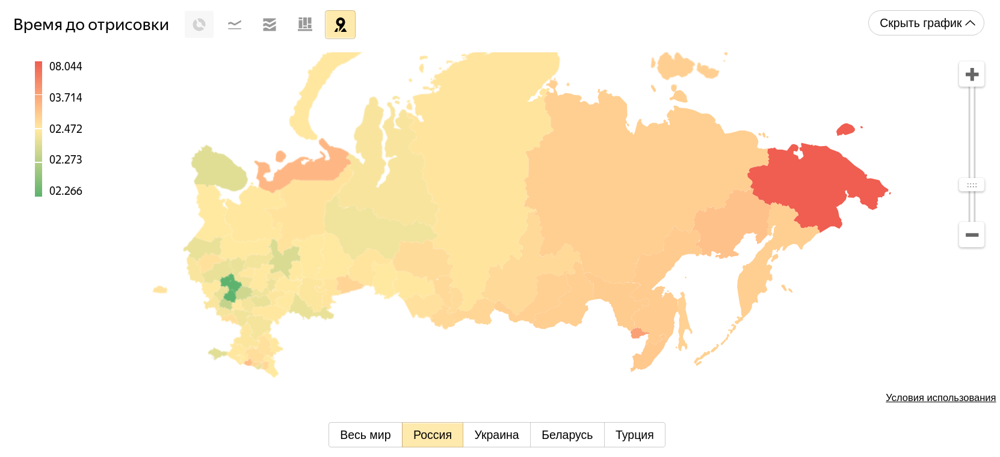
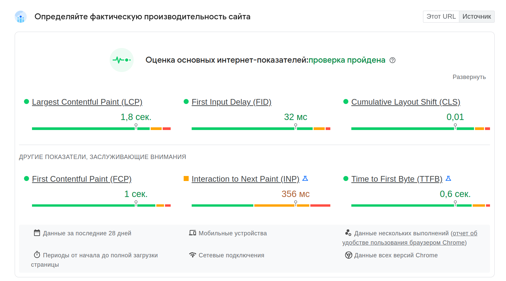
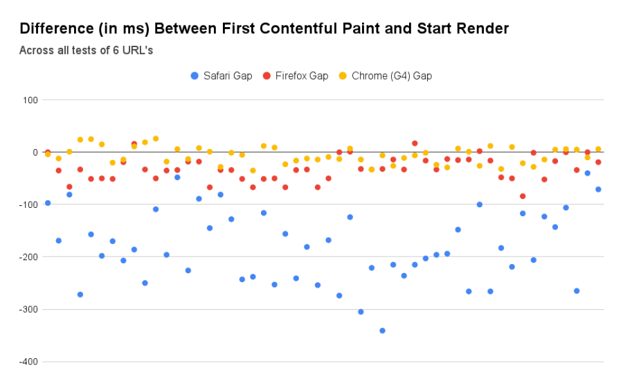

Navigation Timing
Lighthouse, WebPageTest, ...
Плюсы:
Минусы:
Плюсы:
Минусы:

Яндекс.Метрика

Page Speed Insights
Navigation Timing
// Весь объект с данными
const timing = performance.timing;
// Время до первого байта
const timeToFirstByte = timing.responseStart - timing.requestStart;
// Общее время загрузки
const loadTime = timing.loadEventStart - timing.requestStart;
function onLoad() {
const timing = performance.getEntriesByType('navigation')[0];
const nextHopProtocol = timing.nextHopProtocol;
// ...
}
const entries = performance.getEntriesByType('paint');
console.log(entries);
// first-paint: Chromium
// first-contentful-paint: Chromium, Firefox, Safari
Разница между реальным отображением на экране и метриками
Chromium: ~ -5ms
Firefox: ~ -30ms
Safari: ~ -180ms

Chromium & Firefox
// Задержка отклика на первое действие пользователя
const entry = performance.getEntriesByType('first-input')[0];
if (entry) {
const inputDelay = entry.processingStart - entry.startTime;
}
Chromium & Firefox
// Задержка отклика на первое действие пользователя
const observer = new PerformanceObserver(list => {
const entry = list.getEntries()[0];
if (entry) {
const inputDelay = entry.processingStart - entry.startTime;
}
});
observer.observe({ type: 'first-input', buffered: true });
Chromium & Firefox
// Задержка отклика на первое действие пользователя
const observer = new PerformanceObserver(list => {
const entry = list.getEntries()[0];
if (entry) {
const inputDelay = entry.processingStart - entry.startTime;
observer.disconnect();
}
});
observer.observe({ type: 'first-input', buffered: true });
Chromium & Firefox
// Задержка отклика на первое действие пользователя
const observer = new PerformanceObserver(list => {
const entry = list.getEntries()[0];
if (entry) {
const inputDelay = entry.processingStart - entry.startTime;
observer.disconnect();
}
});
observer.observe({ type: 'first-input', buffered: true });
Chromium
// Загруженность основного потока
let sum = 0;
const observer = new PerformanceObserver(list => {
list.getEntries().forEach(entry => {
sum += entry.duration;
});
console.log('sum', sum);
});
observer.observe({ type: 'longtask', buffered: true });
https://web.dev/cls/
Chromium
// Сдвиги контента на странице
let sum = 0;
const observer = new PerformanceObserver(list => {
list.getEntries().forEach(entry => {
sum += entry.value;
});
console.log('sum', sum);
});
observer.observe({ type: 'layout-shift', buffered: true });
const start = performance.now();
// ...
const elapsedTime = performance.now() - start;
fetch(url).then(() => {
const totalTime = performance.now() - start;
});
Способ оценки производительности и удобства сайта
Дополнительные метрики
npm install web-vitals
// ...
import {getLCP, getFID, getCLS} from 'web-vitals';
getCLS(console.log);
getFID(console.log);
getLCP(console.log);
Собираем метрики по мере готовности
Группируем в пачки и отправляем
Чем больше задержка между событием и отправкой, тем больше вероятность, что данные мы не получим
max(10, 20, 15) = 20
max(10, 90, 15) = 90
С одной стороны, ведёт себя похожим образом с max
С другой стороны, является "минимумом" для всех пользователей
avg(10, 20, 15) = 15
avg(10, 90, 15) = 55
[121, 77, 127, 189, 133, 53, 94, 105, 150, 69, 111, 199, 122, 77, 223, 111, 85, 76, 171, 158, 91, 71, 52, 72, 232, 223, 135, 184, 52, 180, 261, 53, 139, 237, 284, 92, 261, 56, 69, 55, 62, 196, 94, 187, 214, 164, 308, 174, 111, 59, 87, 55, 93, 177, 200, 66, 251, 124, 202, 208, 67, 92, 259, 203, 72, 56, 211, 50, 145, 50, 156, 373, 131, 74, 83, 199, 94, 59, 156, 145, 214, 55, 106, 197, 140, 218, 144, 60, 119, 114, 136, 146, 308, 91, 281, 99, 183, 52, 68, 336]
[50, 50, 52, 52, 52, 53, 53, 55, 55, 55, 56, 56, 59, 59, 60, 62, 66, 67, 68, 69, 69, 71, 72, 72, 74, 76, 77, 77, 83, 85, 87, 91, 91, 92, 92, 93, 94, 94, 94, 99, 105, 106, 111, 111, 111, 114, 119, 121, 122, 124, 127, 131, 133, 135, 136, 139, 140, 144, 145, 145, 146, 150, 156, 156, 158, 164, 171, 174, 177, 180, 183, 184, 187, 189, 196, 197, 199, 199, 200, 202, 203, 208, 211, 214, 214, 218, 223, 223, 232, 237, 251, 259, 261, 261, 281, 284, 308, 308, 336, 373]
sort()
[121, 77, 127, 189, 133, 53, 94, 105, 150, 69, 111, 199, 122, 77, 223, 111, 85, 76, 171, 158, 91, 71, 52, 72, 232, 223, 135, 184, 52, 180, 261, 53, 139, 237, 284, 92, 261, 56, 69, 55, 62, 196, 94, 187, 214, 164, 308, 174, 111, 59, 87, 55, 93, 177, 200, 66, 251, 124, 202, 208, 67, 92, 259, 203, 72, 56, 211, 50, 145, 50, 156, 373, 131, 74, 83, 199, 94, 59, 156, 145, 214, 55, 106, 197, 140, 218, 144, 60, 119, 114, 136, 146, 308, 91, 281, 99, 183, 52, 68, 336]
[50, 50, 52, 52, 52, 53, 53, 55, 55, 55, 56, 56, 59, 59, 60, 62, 66, 67, 68, 69, 69, 71, 72, 72, 74, 76, 77, 77, 83, 85, 87, 91, 91, 92, 92, 93, 94, 94, 94, 99, 105, 106, 111, 111, 111, 114, 119, 121, 122, 124, 127, 131, 133, 135, 136, 139, 140, 144, 145, 145, 146, 150, 156, 156, 158, 164, 171, 174, 177, 180, 183, 184, 187, 189, 196, 197, 199, 199, 200, 202, 203, 208, 211, 214, 214, 218, 223, 223, 232, 237, 251, 259, 261, 261, 281, 284, 308, 308, 336, 373]
50%
[121, 77, 127, 189, 133, 53, 94, 105, 150, 69, 111, 199, 122, 77, 223, 111, 85, 76, 171, 158, 91, 71, 52, 72, 232, 223, 135, 184, 52, 180, 261, 53, 139, 237, 284, 92, 261, 56, 69, 55, 62, 196, 94, 187, 214, 164, 308, 174, 111, 59, 87, 55, 93, 177, 200, 66, 251, 124, 202, 208, 67, 92, 259, 203, 72, 56, 211, 50, 145, 50, 156, 373, 131, 74, 83, 199, 94, 59, 156, 145, 214, 55, 106, 197, 140, 218, 144, 60, 119, 114, 136, 146, 308, 91, 281, 99, 183, 52, 68, 336]
[50, 50, 52, 52, 52, 53, 53, 55, 55, 55, 56, 56, 59, 59, 60, 62, 66, 67, 68, 69, 69, 71, 72, 72, 74, 76, 77, 77, 83, 85, 87, 91, 91, 92, 92, 93, 94, 94, 94, 99, 105, 106, 111, 111, 111, 114, 119, 121, 122, 124, 127, 131, 133, 135, 136, 139, 140, 144, 145, 145, 146, 150, 156, 156, 158, 164, 171, 174, 177, 180, 183, 184, 187, 189, 196, 197, 199, 199, 200, 202, 203, 208, 211, 214, 214, 218, 223, 223, 232, 237, 251, 259, 261, 261, 281, 284, 308, 308, 336, 373]
25%, 50%, 75%, 95%
Фактически, max = 100й процентиль
99 процентиль всё ещё даёт шумные данные, на него оказывают сильное влияние малое число пользователей
Чаще всего оценивают 75й процентиль, но полезны и остальные
Собираем метрики, в том числе важные для вашего сервиса
Получаем данные
Группируем данные по критериям
Используем процентили
Следим за скоростью вашего сайта и улучшаем её